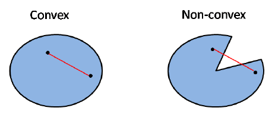

Chapter 14 Basics of optimization
14.1 Univariate optimization
Theorem 14.1 (Second derivative test for local extrema)
Suppose \(f''(x)\) is continuous on an open interval that contains \(x = c\)
If \(f'(c) = 0\) and \(f''(c) > 0\), then \(f(x)\) has a local minimum at \(x = c\)
If \(f'(c) = 0\) and \(f''(c) < 0\), then \(f(x)\) has a local maximum at \(x = c\)
If \(f'(c) = 0\) and \(f''(c) = 0\), the the test fails. \(f(x)\) my have a local maximum, a local minimum, or neither
14.2 Multivariate optimization
14.3 Convex functions
Intuitively, convexity means if we connect \(\bar{w}_1, \bar{w}_2\) with a straight line, then all points along the line must be in set \(S\). For example, an open interval \((a, b)\) on the 1-dimensional number line is a convex set.

An property of convex set \(S\) is that, given \(r\) points \(\bar{w}_1, ..., \bar{w}_r\) and \(r\) nonnegative numbers \(\lambda_1, ..., \lambda_r\) such that \(\lambda_1 + \cdots + \lambda_r = 1\) ,the affine combination
\[ \sum _{i=1}^r\lambda_i\bar{w}_k \] belongs to \(s\). As the definition of a convex set is the case \(r = 2\), this property characterizes convex sets.
Definition 14.2 (Convex function) Let \(f(\cdot)\) be a real-valued function with a convex domain, so that if \(f(\bar{w}_1), f(\bar{w}_2)\) is defined, for any \(\lambda \in (0, 1)\), the expression \(f\big( \lambda\bar{w}_1 + (1- \lambda)\bar{w}_2\big)\) is defined. For any \(\lambda \in (0, 1)\) and \(\bar{w}_1, \bar{w}_2\)
- \(f\) is called convex if
\[ f\big(\lambda\bar{w}_1 + (1 - \lambda)\bar{w}_2\big) \le \lambda f(\bar{w}_1) + (1-\lambda)f(\bar{w}_2) \]
- \(f\) is called strictly convex if